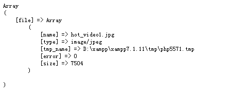

原文连接:https://www.cnblogs.com/zhouxiaohei/p/11706468.html
-
前端页面代码
<!-- enctype 定义form要上传文件类型-->
<form action="" method="post" id="t" enctype="multipart/form-data">
<!--
multiple 作用是可以同时选中多个文件，多张图片
accept 指定input可以上传那种类型
onchange 当本元素动的时候，点击也属于 调用abs函数
-->
<input type="file" name='tables_a[]' id="tables" multiple accept="image/*" onchange="abs()">
<!-- 隐藏域 在上传完文件以后，把文件的地址赋给input tables_2 的值 -->
<input type="hidden" name='tables' id='tables_2'>
<!-- 提交表单 -->
<input type="submit" value="提交">
</form>
<!--jquery 必须有，一定要放在执行js的上方，可以是头部-->
<script src="/js/jquery-1.8.3.js"></script>
<script>
/*定义函数*/
function abs(){
/*获得文件*/
var fileArray = document.getElementById('tables').files[0];
/*初始化 FormData 对象 文件处理对象 序列化表单数据*/
var formData = new FormData();
/*给对象中添加文件信息，没有对象或者没有文件信息后台是得不到的*/
formData.append('file', fileArray);
/*jquery ajax 方法*/
$.ajax({
url: "ceshiphp.php",/*传向后台服务器文件*/
type: 'POST', /*传递方法 */
data:formData, /*要带的值，在这里只能带一个formdata ，不可以增加其他*/
//传递的数据
dataType : 'json', //传递数据的格式
async:false, //这是重要的一步，防止重复提交的
cache: false, //设置为false，上传文件不需要缓存。
contentType: false,//设置为false,因为是构造的FormData对象,所以这里设置为false。
processData: false,//设置为false,因为data值是FormData对象，不需要对数据做处理。
success: function (responseStr){
if(responseStr.code != 0){
alert('上传成功');
$('#tables_2').val(responseStr.data);
}else{
alert('上传失败');
}
},
error: function () {
alert("上传错误！");
}
});
}
</script>
2.后端页面代码
echo "<pre>";
print_r($_FILES);
echo "</pre>";
打印出以下内容，
name 文件名称
type 文件类型
tmp_name 文件临时地址
erro 错误编码
size 文件大小


/*得到文件名称并且赋值给$name变量*/
$name = $_FILES['fileArray']['name'];
/*截取文件后缀并复制给$last*/
$last = substr($name,strrpos($name,'.'));
/*使用时间戳修改文件名称连接后缀并且复制给$name*/
$name = date('YmdHis').rand(10000,99999).$last;
/*定义要传文件的位置路径*/
$address = ROOT_PATH.'/upload/'.$name;
/*使用函数move_uploaded_file 移动临时文件到定义好的地址*/
if(move_uploaded_file($_FILES['fileArray']['tmp_name'],$address)){
echo 1;
}else{
echo 0;
}